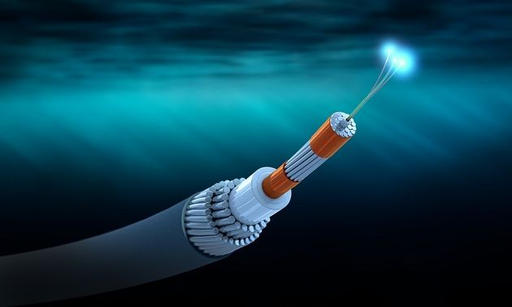
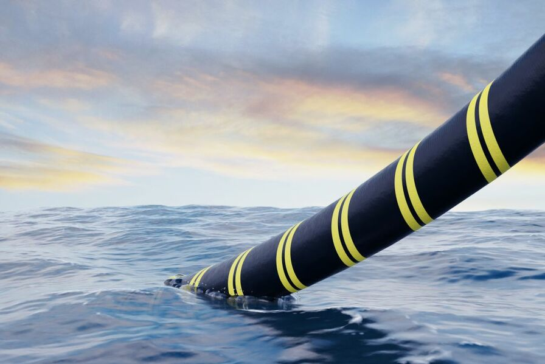
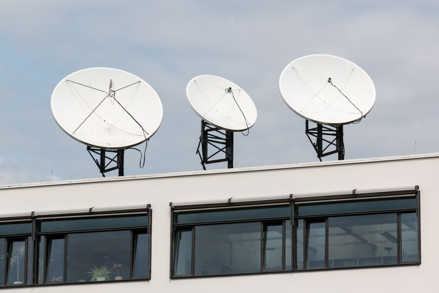
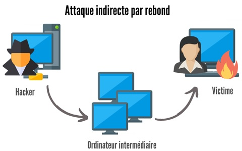

Meta déploie le plus long câble sous-marin au monde
Waterworth, un câble sous-marin prévu pour mesurer plus de 50 000 km pour un coût de 10 Milliard de Dollars. Le plus long à ce jour, il passerait aux États-Unis, en Inde, au Brésil ou en Afrique du Sud et aurait pour but premier de "libérer le potentiel de l'IA".

Date de parution : 17 Février 2025
Source : ZdNet
Un câble sous-marin endommagé en mer Baltique, la Suède saisit un navire bulgare
Le lundi 26 Janvier 2025, un câble reliant la Suède à la Lettonie a été endommagé. Un navire Bulgare à été accusé, niant cependant tout les fait. Cet évènement couplé à d'autre nombreux dommage causé sur des câbles sous-marin sur les derniers mois, mène les expert à accusé la Russie d'être involvé dans ces opérations.

Date de parution : 27 Janvier 2025
Source : Usine Digital
Corée du Sud : Arrestation d'un PDG qui équipait secrètement ses récepteurs satellite de fonctions DDoS
Le Jeudi 29 Novembre, surgit une annonce par la police sud-coréen de l'arrestation d'un CEO, soupconné d'avoir modifié 240 000 récepteur satellite entre 2019 et 2024. 98 000 etant déjà équipé, le reste fut modifié plus tard par. Le client reste encore inconnu

Date de parution : 04 Décembre 2024
Source : Usine Digital
Free Mobile condamné à payer 2,2 millions d'euros pour pratiques commerciales trompeuses
Entre le 17 Aout 2020 et le 4 Janvier 2022, Free à procéder à des annulations de commandes de téléphones, sans effectuer le moindre remboursement auprès des clients concernés.
Date de parution : 02 Décembre 2024
Source : Usine Digital
Attaque du plus proche voisin : une variante de l’attaque par rebond
Cet article présente "l'attaque du plus proche voisin", une variante de l'attaque par rebond documentée par Veloxity. Cette technique consiste à exploiter les réseaux Wi-Fi des voisins de la cible principale pour pénétrer son réseau. De ce fait, ils sont capable de pénétrer dans le système.

Date de parution : 25 Novembre 2024
Source : LeMagIT